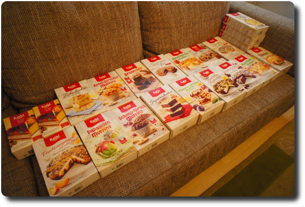

Hallo Nikola
Hallo Welt, hallo Nikola!
Hallo Welt, hallo Nikola!
Bei uns gab es heute Hackfleischbällchen, gefüllt mit Feta-Käse. Sehr lecker, und gar nicht schwer zuzubereiten.
Vielen Dank, Maria Kulinarica für dieses schönes Rezept: http://kulinarica.blogspot.de/2015/04/hackfleischfrikadellen-mit-feta-kase.html

Am vergangenen Donnerstag (Fronleichnam) haben wir endlich unseren Gutschein für das Technikmuseum in Speyer eingelöst, den wir vor knapp einem Jahr bei der Frankfurter Rundschau gewonnen haben.

Wir hatten heute nochmal die Möglichkeit, "Frau Müller muss weg" im Kino zu schauen. Dieser Film kriegt von uns eine klare Guck-Empfehlung. Denn so gute Dialoge und die kurzweilige Handlung haben wir dem Deutschen Kino schon lange nicht mehr zugetraut. Der Spaß kommt aber auch nicht zu kurz. Also, wer die Möglichkeit hat, sollte hier nochmal ein Ticket ziehen. Oder zwei.
Zum Trailer
Meine Kurz-Kritik über die ersten 45 Minuten von Jacky im Königreich der Frauen: Was. für. ein. Mist!!!
In diesem Film geht es um einen jungen Mann, der Schlagzeug in einer Musikschule lernt. Sehr eindrucksvoller Film. Hat mir gut gefallen, meiner besseren Hälfte eher nicht. :)
Zum Trailer
Mein erster längerer Blog-Post ist fertig: Unsere Feldahorn-Hecke - ein Jahresrückblick
Dieser ist auf dem Blog meiner besseren Hälfte erschienen.
Online-Shopping und Hunger, eine fatale Kombination. 😄 Freu mich schon auf's Backen!
Ab heute druckt die Frankfurter Rundschau in ihrer Printausgabe die Entwicklung des Global Challenges Index und der enthaltenen Aktien ab, um, Zitat: "...es unseren Lesern erleichtern, verantwortungsvoll in Aktien zu investieren. Außerdem werden wir die im GCX notierten Unternehmen journalistisch begleiten, um unseren Lesern zu zeigen, was nachhaltiges Wirtschaften in der Praxis bedeutet.“
Ich finde, dies ist ein toller Schritt von der Frankfurter Rundschau und bin auf die kommenden Artikel zu diesem Thema sehr gespannt. Denn wie Geldanlage und Nachhaltigkeit gut zusammengehen, hat mich schon immer interessiert. Ich denke, die meine Tageszeitung kann mir hier viele gute Tipps geben.
Hier der Link zum Aktienindex: http://gcindex.boersenag.de/de/index.php
Letzte Woche waren wir auf Urlaubsreise in Sachsen unterwegs - meinem Heimatbundesland (Mehr Bilder gibt es davon später). Im Raum Leipzig gibt es zur Zeit wieder Reformationsbrötchen beim Bäcker zu kaufen - im Gedenken an die Reformation der Kirche durch Martin Luther.
Dieses Brötchen ist ein Hefegebäck mit saftigem Teig, der meist Rosinen, Zitronat und Orangeat enthält. In der Mitte muss immer ein Klecks rote Marmelade sein. Sonst ist es kein echtes Reformationsbrötchen. Dieser Klecks soll ja die Lutherrose darstellen (siehe Wikipedia).
Wir hatten unsere Brötchen bei Lukas Bäcker auf dem Leipziger Hauptbahnhof gekauft. Die waren wirklich superlecker, ich hätte gern noch mehr davon gehabt!